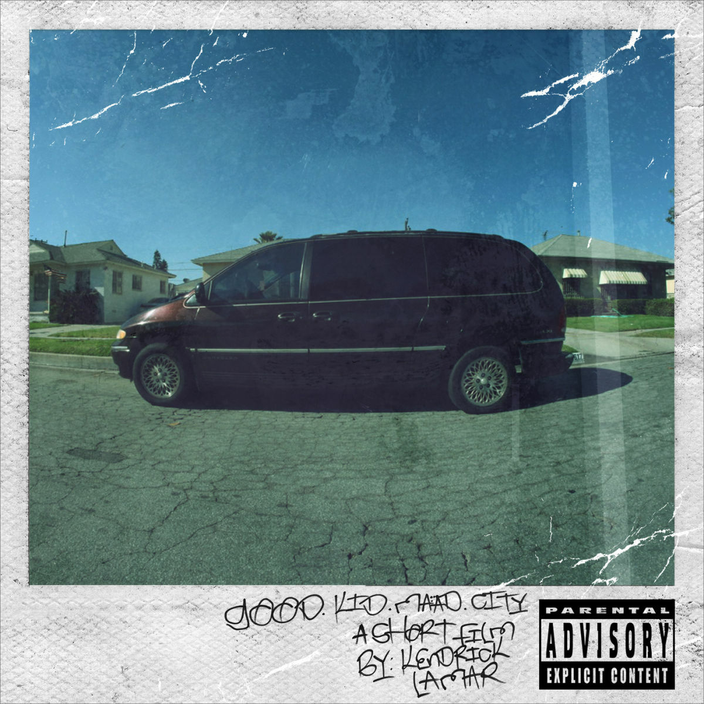
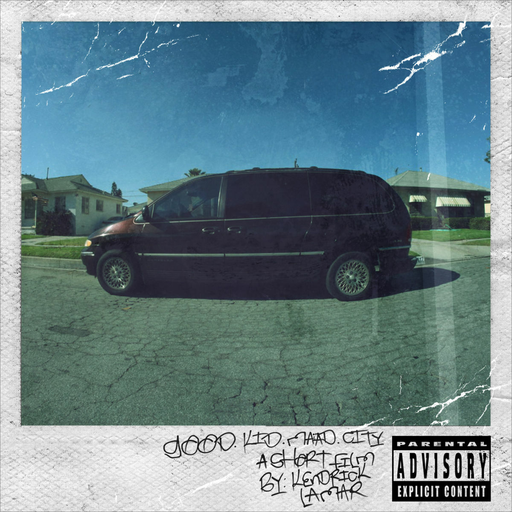

Hello and welcome to my website. I'll mostly use this site for random stuff I want to share, and I will also start to post my music reviews here.
I also just kinda wanted to say that I have my own site.
Up top is the navigation bar, you click the link-thing to return here by the way (the black and red box). Many of the buttons are not finished yet, it will tell you that.
Shout out ChatGPT, without it I would not have been bothered to set all this up. As damaging as A.I. may be for our creative futures, it sure is hella useful.
ESPECIALLY Touring Cars, evidently.


 

These aren't necessarliy my favorite of each artist(s). I enjoy Chill Hip Hop if you couldn't tell.
I dislike when people just put pictures of the games they like on these sorts of things (for some reason) so I'll just list them.
I'm not putting pictures for this. I like PC building, emulation and console modding. My favorite consoles are the PS2 and Xbox 360. PC Master Race, Team AMD all the way.
That's pretty much it. Navigate the website or comeback when there's something fun to do.